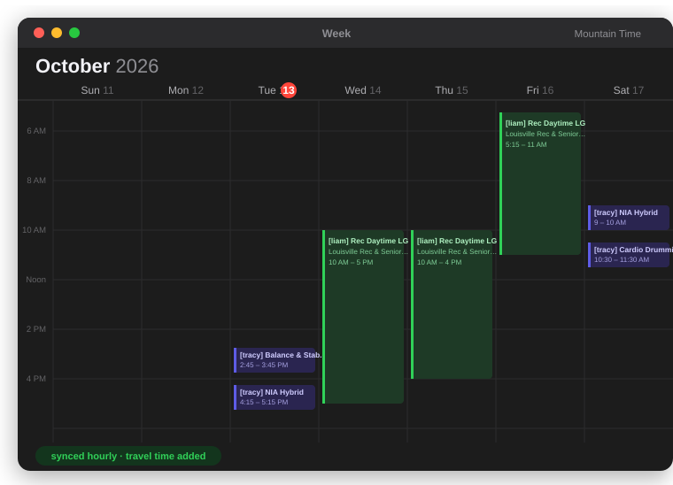
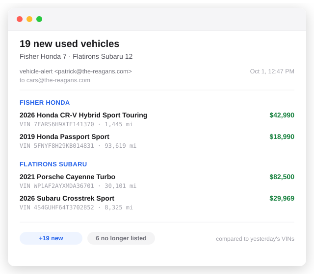
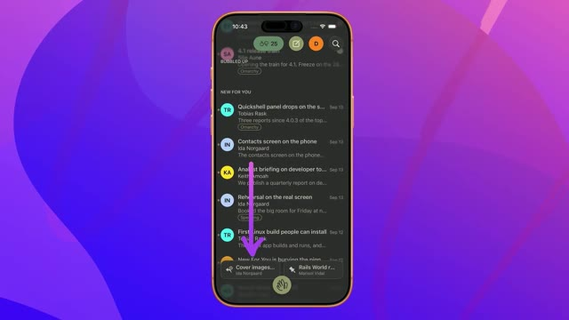

The Only Limitation
Is Your Imagination
Patrick Reagan
Software
calendar-export
GoalFamily works at the Louisville Rec Center — scheduled
in When2Work, no calendar sync. Get everyone's shifts onto the
family calendar.
Outcome
- Playwright logs in and scrapes the portal, then syncs to a dedicated Fastmail calendar
- Each person's shifts (Tracy, Liam), reminders, Apple travel-time and per-event destinations
- Runs hourly on GitHub Actions and cleans up stale events

TypeScript · Playwright · CalDAV / Fastmail · GitHub Actions cron
vehicle-alert
GoalHear about new used cars at local dealers before they
sell, without refreshing their sites.
Outcome
- Checks each dealer's inventory feed and compares VINs to yesterday's
- Covers 2 dealers, with one combined daily email
- Runs on GitHub Actions and commits its own snapshot

Python · GitHub Actions · SMTP (Fastmail)
Software · the rest, one line each 1 / 2
- drive-reconArchaeology 17 drives cataloged, a ReiserFS reader built from scratch, ~80 GB recovered.
- squeezebox-resurrectMedia A SlimProto server written in Go in a weekend — gapless, searchable.
- hold-finderApp A movie watchlist in, library holds placed for you — even past a Cloudflare wall.
- minecraft-serverApps One-click spin-up / tear-down; the world lives on a detachable volume.
Software · the rest, one line each 2 / 2
- unifi-network-configAutomation The whole network config applied and verified by script via the API.
- transMedia A CLI that decides remux vs. encode, deinterlaces DVDs, picks dual audio.
-
cd-ripperMedia
ripcdtags and art-embeds straight off the disc macOS already mounts. - bookishTools A booklet PDF imposed for a non-duplex printer — fronts, flip, backs.
A detour · DHH, Rails World 2026
"The price of developing those things has gone to damn near zero." DHH got into software to build things — and now there's no real limit on what you can build. Native, once a big lift, takes little effort. So I pointed an agent at one I'd always wanted: a native macOS Winamp.

Winamp
What it wasThe MP3 player everyone used before iTunes. A
tiny, fast desktop app in a 275×116 window —
“it really whips the llama's ass” —
with a green LCD readout, a spectrum analyzer, and a playlist.
Tens of millions of installs.
Why it still matters
- Skins. Every pixel was yours to replace — the look became its own hobby
- Instant. Opened and played before a web player finishes loading
- Dense. Transport, time, volume, balance, EQ, playlist — all in one small panel

Nullsoft · Windows · the ancestor of every skinned
player
Cloudamp
the player I wanted, pointed at the tracks I listen to
00/13
>
SEND
Other Projects
property-tax
GoalOur assessment looked high. Check it against the public
records and, if the data backs it, appeal — asking for about a
6% reduction.
What the agent found
- One comparable sale. The whole market valuation rested on a single sale from the start of the base period — argued one sale isn't a reliable basis
- Time-adjustment ran ahead of the data. That same house later resold; a straight line between its two real sales came in lower than the assessor's number
- Old HVAC. 20+ yr furnace, AC past its life, visible corrosion — ~$15–20k to replace, not reflected in the value
public assessor records · comparable-sales analysis · appeal letter
· decision pending
landscape design
GoalReimagine the yard without paying a landscape
architect up front.
Outcome
- A site plan drawn to scale — beds, plantings, and hardscape zones
- Something concrete to build from, or hand to a pro
design canvas · scaled site plan
Other projects · the rest, one line each
- wifi-researchHousehold A ~$264 whole-home build speced: VLANs, midnight cutoff, DNS-over-HTTPS blocked.
- Kodi upgradesHousehold Dead posters traced to a dead scraper; LibreELEC 9→12, 819 movies kept, photo scan 37 min → 13 s.
- verizon-billingHousehold Moved 5 lines to Visible, ~$98/mo saved; proved "slow data" was a plan cap.
- stonksHousehold An investment policy capping speculative holdings at 15%.